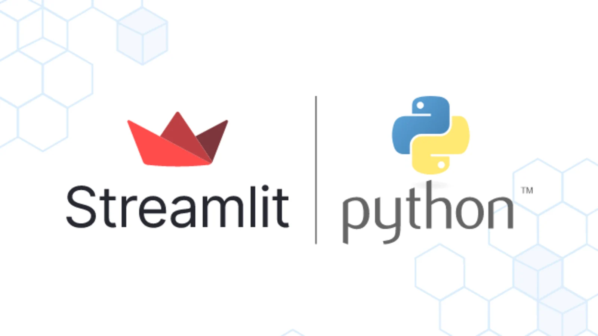

Profissional de tecnologia com sólida experiência em integração de APIs, desenvolvimento de pipelines ETL em Python e automação de processos. Atuo com construção de microserviços, aplicações web, e orquestração de fluxos com Airflow. Tenho foco em soluções escaláveis que melhoram a eficiência operacional e a visibilidade de dados, especialmente em ambientes de e-commerce.
Ferramentas
- Apache Airflow
- dbt
- Docker
- Git
- Power BI
- Streamlit
- Repositórios de código: Github e Bitbucket
Analista de Sistemas Sênior - Britânia Eletrodomésticos
Janeiro 2024 - Atualmente
- Desenvolvimento de APIs e automações com Python para integrar sistemas como SAP e VTEX.
- Criação de APIs oData no ambiente SAP Commerce
- Construção e orquestração de pipelines ETL usando Airflow, com foco em escalabilidade e monitoramento.
- Extração e transformação de dados, com normalização de tabelas SQL.
- Implementação de integrações baseadas em webhooks para ingestão de eventos em tempo real
- Manipulação de dados utilizando bibliotecas Python, como Pandas, e transformação de dados em Data Warehouses com SQL.
- Atuação estratégica em projetos de dados, garantindo consistência, padronização e performance dos fluxos
- Versionamento de código utilizando Git e Github.
Analista de dados Pleno - Condor Super Center
Janeiro 2022 - Dezembro 2023
- Extração de dados a partir de APIs, arquivos estruturados e bancos relacionais.
- Transformação e limpeza de dados com Python e Pandas, visando padronização e confiabilidade.
- Automação de processos repetitivos e rotinas de entrega de dados para as áreas de negócio.
- Versionamento de código utilizando Git e Github.
Projetos
Construção de um agent de IA utilizando openAi e langchain
Objetivos
- O projeto teve como objetivo desenvolver um agente de inteligência artificial capaz de agilizar a análise de uma base de dados.
Resultados
- Por meio de um chat, o usuário pode interagir diretamente com a base de dados conectada ao agente. Ao receber uma pergunta, o agente utiliza o modelo GPT-4 Turbo para processar as informações e fornecer respostas rápidas, precisas e contextualizadas.
Tecnologias e linguagens utilizadas
- Python, OpenAi, LangChain
Projeto completo em meu GitHub: GitHub
Projeto de controle financeiro com Streamlit

Objetivos
- O projeto tem como objetivo desenvolver uma aplicação web para controle das finanças. O streamlit é um framwork python excelente para criação de apps e criar gráficos de forma simples e intuitiva.
Resultados
- O app possuí uma tela para visualizações das finanças e uma para inserir os gastos em um banco local (SqLite).
Tecnologias e linguagens utilizadas
- Python, SQL, Streamlit Framework
Projeto completo em meu GitHub: GitHub
Apache Airflow - Orquestrador de tarefas

Objetivos
- Subir localmente o Airflow para agendamentos de fluxos de dados.
Resultados
- Utilizando Docker e python, foi inicializado o scheduler e db do airflow para criação de dags para agendamento de fluxos e tarefas automáticas. O Airflow é um orquestador muito poderoso e auxilia muito a execução de tarefas.
Tecnologias e linguagens utilizadas
- Python, Apache Airflow, Docker
Projeto completo em meu GitHub: GitHub
Todos os detalhes estão em meu GitHub: GitHub
Entre em contato comigo por meio de:
{kind=link}
{kind=link}